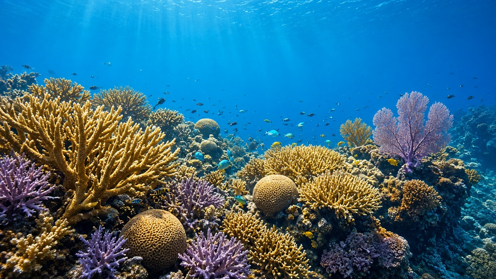
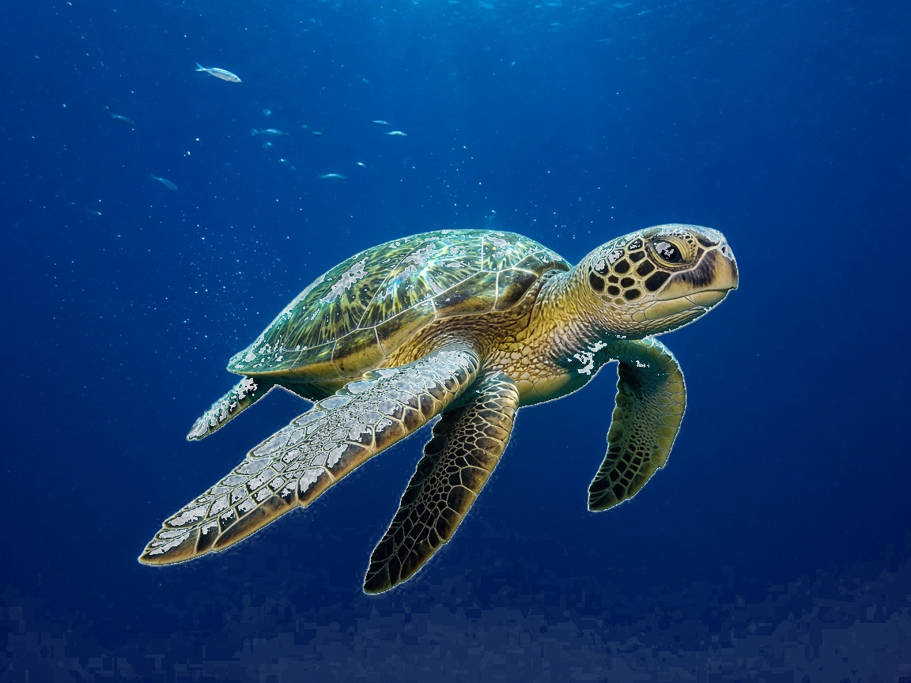
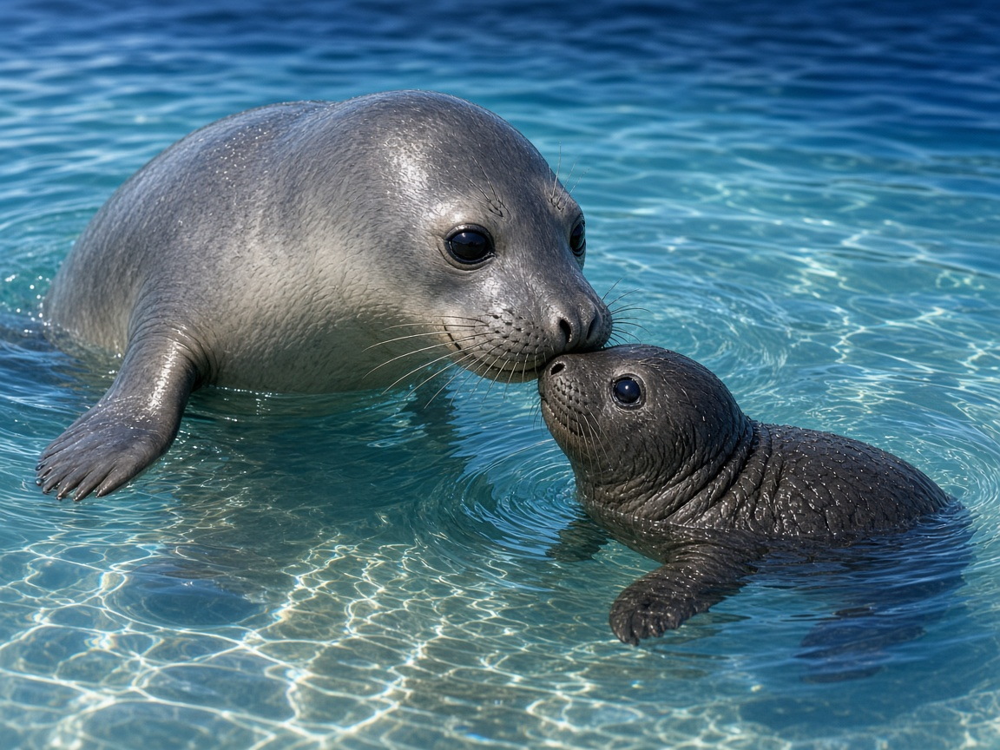

Mote Marine Laboratory
Mote scientists have restored more than 216,000 corals to Florida's Coral Reef, and their restored corals now spawn (Mote figure).
Last reviewed: 21 sources cited
Explain Like I'm 10
- What is it? Coral reef restoration: growing corals and replanting them on the reef.
- Why does it matter? Reefs are declining steeply from warming, acidification, disease, pollution and overfishing.
- How does it help people? Florida’s Coral Reef provides more than $8 billion in economic impact, attracts visitors and protects coastlines from major storms (Mote figure).
The Five W's of Mote Marine Laboratory
Who
Mote Marine Laboratory & Aquarium, an independent nonprofit research institution, with partners including NOAA’s Florida Keys National Marine Sanctuary.
What
Coral reef restoration: growing corals and replanting them on the reef.
When
Ongoing; restored corals began spawning in 2020.
Where
Florida’s Coral Reef, which stretches about 350 miles from the Dry Tortugas to St. Lucie Inlet.
Why
Reefs are declining steeply from warming, acidification, disease, pollution and overfishing.


Florida's Coral Reef
Flagship Scene From Orbit
This is the Florida Keys, photographed October 28, 2001, by ASTER on NASA's Terra satellite. The frame is 51.6 by 29.7 kilometers. The file used here is the original 3441 by 1982 pixels, not an enlarged copy. It shows where Florida's reef tract runs. It is not a medical chart of the corals, and it is not a Mote photograph.
Mote's counted restoration stays the flagship below: more than 216,000 corals put back on Florida's Coral Reef, and restored corals that began spawning in 2020. The same lab also studies sharks, sea turtles, manatees, red tide, seagrass, fisheries and aquaculture, and marine immunology. Those seven are research, monitoring, or controlled tests. They are not the same kind of result as the coral count.
Image: NASA/GSFC/METI/ERSDAC/JAROS and U.S./Japan ASTER Science Team (PIA03890). NASA media guidelines.
Impact Statement
Nonprofit solution · active
Mote scientists have restored more than 216,000 corals to Florida’s Coral Reef (Mote figure). Starting in 2020, several restored corals spawned, the first of any massive or mounding species documented to spawn after restoration in Florida or Caribbean waters.
Source: Mote Marine Laboratory, coral reef restoration
For Further Information: Mote Marine Laboratory, coral reef restoration
How This Supports the Planet’s Health
A coral reef is living habitat. NOAA’s 2020 status report on Florida’s Coral Reef describes a shallow reef that has long held a diversity of fishes and corals, and a healthy reef that can absorb 97 percent of the wave energy from a storm or hurricane before it reaches shore. Restoring corals rebuilds that shelter: more places for marine life to hide, feed, and grow, and a stony framework that can keep calming waves.
Mote reports that its scientists have restored more than 216,000 corals to Florida’s Coral Reef, and that restored massive corals began spawning in 2020. Those were the first massive or mounding corals documented to spawn after restoration in Florida or Caribbean waters. Spawning means those colonies can start another generation. It is a real result for the corals Mote put back. It does not mean the whole reef tract has recovered, and it does not stop the ocean from warming.
That same 2020 NOAA report cites a study estimating that reefs protect over $560 million worth of building infrastructure in Florida from storm flooding each year. The figure is about buildings and floodwater, counted per year. It is not a sales or wage total. New coral can help a reef keep doing that protective work.
Sources: NOAA, Coral reef condition: A status report for Florida’s Coral Reef (2020); Mote Marine Laboratory, coral reef restoration
Seven other Mote programs
Coral restoration stays the finished count. Each card separates what Mote has shown from what it has not. Mote's own photographs are not republished here. Mote's terms allow classroom and personal copies, and they require written permission before those pictures are published. No licensed high-resolution photo of Mote's shark trials, manatee surveys, red-tide tests, snook releases, or immunology lab was already in this site's library.
Sharks
Shown: in 198 controlled trials at Mote's Marine Experimental Research Facility in Sarasota, captive bonnethead sharks were more than 45 times less likely to take bait when an electronic pulse device was on than when it was off. The inactive device was the control. Not shown: this was not a wild fishery. Mote calls it a first step and plans tests in real fishing.
Seagrass

Image: NASA/Kim Shiflett (KSC-20230329-PH-KLS01_0304). Master file 4000 by 3000 pixels. The widest responsive copy is 3840 pixels wide, a reduction of that master, not an enlarged fake. This is Kennedy Space Center, not Mote's Wolf Center.
Shown: Mote's Seagrass Ecosystem Restoration Research Program and the Ron and Marla Wolf Seagrass Restoration Center grow seagrass in nurseries and build a genetic library. Not shown: goals include restoration and blue-carbon work. Mote has not published a verified total of carbon removed.
Sources: Mote, Seagrass Ecosystem Restoration Research; Mote, Ron and Marla Wolf Seagrass Restoration Center
Sea turtles

Image: NASA (2010-5237), loggerhead release at Merritt Island National Wildlife Refuge. Native size 3000 by 1996 pixels. Not Mote's 2025 nest count.
Shown: in 2025, Mote scientists and volunteers documented 5,736 sea turtle nests from Longboat Key through Venice, a record for Mote, and the Hatchling Hospital treated 2,786 hatchlings. Not shown: those figures are nests documented and hatchlings treated. They are not a count of turtles saved or released.
Red tide
Shown: Mote and the Florida Fish and Wildlife Conservation Commission run the Florida Red Tide Mitigation and Technology Development Initiative. It tests ways to lessen red tide harm in the lab, in mesocosms, and in pilot studies, and it works on detection and beach-condition reports. Not shown: there is no proven cure for red tide.
Source: Mote and FWC, Florida Red Tide Mitigation and Technology Development Initiative
Manatees
Shown: for decades Mote has identified individual manatees from photos of their scars and counted them from airplanes, with the Florida Fish and Wildlife Conservation Commission and the U.S. Geological Survey. Not shown: photo-ID and aerial surveys are monitoring. They are not proof the Florida manatee population has recovered.
Fisheries and aquaculture
Shown: a published study covered 25 stocking experiments that together released 51,074 juvenile snook and tracked survival. Aquaculture work cleans and recycles water and reuses nutrients from fish culture to grow plants. Not shown: the releases are experiments. They are not proof the wild snook population has recovered.
Source: Mote, Fisheries and Aquaculture
Marine immunology
Shown: factors from shark immune cells inhibited several human tumor cell lines in laboratory cultures. Not shown: this is lab research only. It is not a cancer treatment.
Source: Mote, Marine Immunology

Explore Mote's new aquarium
Mote's own menu calls this place “Mote SEA — new Aquarium.” The aquarium page is titled Mote Science Education Aquarium, at 225 University Town Center Drive, Sarasota. Hours and ticket prices stay on Mote's page. This is a Saving Planets summary, not Mote's website.
Plan your visit opens Mote's visit page, which says Mote SEA is open at the University Town Center address. Research opens Mote's public research home. That page does not mean every paper or data set is free to read.
On November 7, 2026, Charity Navigator's profile for Mote Marine Laboratory, EIN 59-0756643, Sarasota, website mote.org, displayed a Four-Star rating and a 99 percent score. That rating is Charity Navigator's. It is not an endorsement of Saving Planets. Mote also publishes an independent audit of the years ended September 30, 2024 and 2023, with an unmodified opinion dated August 29, 2025.
Sources: Mote, Aquarium; Mote, Visit; Mote, Donate; Mote, Research; Charity Navigator, Mote Marine Laboratory; Mote, FY2024 audited financial statements
On November 7, 2026, Charity Navigator's profile for Mote Marine Laboratory, EIN 59-0756643, Sarasota, website mote.org, displayed a Four-Star rating and a 99 percent score. Last reviewed: 21 sources cited How we check a Donate link
For Teachers
Discussion questions
- What is Mote Marine Laboratory, and what problem does it help solve?
- Who is behind Mote Marine Laboratory, and where does the work happen?
- How does Mote Marine Laboratory help both people and nature? Use one fact from this page.
Sources are listed with each fact in the Five W's above.
Activities that use pages already on this site
- Shark control. The inactive device was the control in 198 lab trials. Read the impact note on Cool Earth's basic-income pilot, which had no control group. Write one sentence on what a control lets you say, and why Mote's trial is still not proof in a wild fishery.
- Manatee photo-ID. List two marks a photo could record, then say why a scar catalog is monitoring rather than proof of recovery. Build a one-page plan that includes this page in the Lesson Plan Builder.
- Seagrass habitat. On Seagrass Meadows the questions are: What is Seagrass Meadows, and what problem does it help solve? Who is behind Seagrass Meadows, and where does the work happen? How does Seagrass Meadows help both people and nature? Use one fact from that page. On Project Seagrass the questions are the same three, with that project’s name. This Mote page does not give a carbon-removal total for seagrass.
- Aquaculture and food. Mote recycles fish-farm water and reuses nutrients to grow plants. Compare that idea with ISS water recovery, Veggie, and Alaska kelp farming. Those are other pages, not Mote's snook study. The 51,074 juvenile snook were an experiment, not a recovered population.
- Turtles. Read Sea Turtle Conservancy. Explain why 5,736 documented nests and 2,786 treated hatchlings are not a count of turtles saved and released.
Standards Alignment
U.S. Next Generation Science Standards (NGSS) and Common Core. Official text, in English.
- K-ESS3-3 (Grade K-2) Communicate solutions that will reduce the impact of humans on the land, water, air, and/or other living things in the local environment.
- 5-ESS3-1 (Grade 3-5) Obtain and combine information about ways individual communities use science ideas to protect the Earth's resources and environment.
- MS-ESS3-3 (Grade 6-8) Apply scientific principles to design a method for monitoring and minimizing a human impact on the environment.
- MS-LS2-5 (Grade 6-8) Evaluate competing design solutions for maintaining biodiversity and ecosystem services.
- HS-ESS3-4 (Grade 9-12) Evaluate or refine a technological solution that reduces impacts of human activities on natural systems.
- CCSS RI.5.9 (Grade 3-5) Integrate information from several texts on the same topic in order to write or speak about the subject knowledgeably.
- CCSS RST.6-8.1 (Grade 6-8) Cite specific textual evidence to support analysis of science and technical texts.
Cite This Page
APA
Saving Planets. (n.d.). Mote Marine Laboratory. https://www.savingplanets.com/Mote_Marine_Laboratory.html
MLA
"Mote Marine Laboratory." Saving Planets, https://www.savingplanets.com/Mote_Marine_Laboratory.html.
For Teachers
Mote’s own education pages for classrooms. These are Mote’s program pages, not Saving Planets lesson files, and they are not described here as free downloads.
Created by founder and SI, illustrative reef rendering.